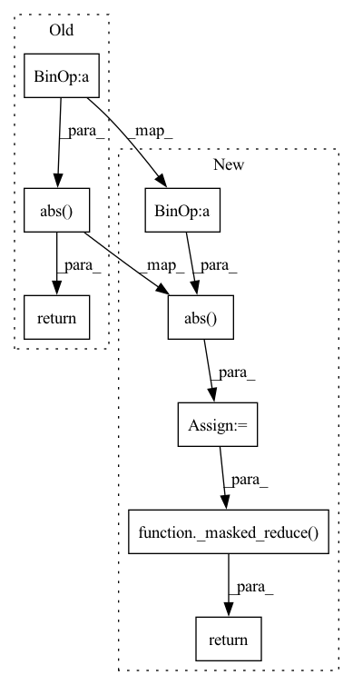

Pattern ID :6486

Before Change
def mape(y_hat, y):
return torch.abs((y_hat - y) / y)
def pinball_loss(y_hat, y, q):
err = y - y_hat
After Change
Returns:
float | torch.Tensor: The Mean Absolute Percentage Error.
err = torch.abs((y_hat - y)/(y + tsl.epsilon))
return _masked_reduce(err, reduction, mask, nan_to_zero)
def mse(y_hat: torch.Tensor, y: torch.Tensor, mask: Optional[torch.Tensor] = None,
reduction: ReductionType = "mean",
In pattern: SUPERPATTERN
Frequency: 3
Non-data size: 8
Instances
Fragment ID: 22529477
Project Name: torchspatiotemporal/tsl
Commit Name: 91641187daca670184d74fdb8dcdbda0f5eb6e9d
Time: 2022-11-14
Author: stefano.imoscopi@usi.ch
File Name: tsl/metrics/torch/functional.py
M Class Name: AnonimousClass
N Class Name: AnonimousClass
M Method Name: mape(5)
N Method Name: mape(2)
M Parent Class:
N Parent Class:
M File Name: tsl/metrics/torch/functional.py
N File Name: tsl/metrics/torch/functional.py
M Start Line: 11
M End Line: 12
N Start Line: 118
N End Line: 153
'>
Before Change
Returns:
float: The Mean Absolute Percentage Error in percentage.
return 100 * np.abs((y_hat - y) / (y + tsl.epsilon)).mean()
def mse(y_hat: FrameArray, y: FrameArray) -> float:
After Change
Returns:
float | np.ndarray: The Mean Absolute Percentage Error. (not in percent)
err = np.abs((y_hat - y)/(y + tsl.epsilon))
return _masked_reduce(err, reduction, mask, nan_to_zero)
def mse(y_hat: FrameArray, y: FrameArray, mask: Optional[FrameArray] = None,
reduction: ReductionType = "mean",
'>
Fragment ID: 22529476
Project Name: torchspatiotemporal/tsl
Commit Name: ab39739efc2636cd5fc6f865bef7270490e74a38
Time: 2022-10-28
Author: stefano.imoscopi@usi.ch
File Name: tsl/metrics/numpy/functional.py
M Class Name: AnonimousClass
N Class Name: AnonimousClass
M Method Name: mape(5)
N Method Name: mape(2)
M Parent Class:
N Parent Class:
M File Name: tsl/metrics/numpy/functional.py
N File Name: tsl/metrics/numpy/functional.py
M Start Line: 98
M End Line: 115
N Start Line: 116
N End Line: 151
'>
Before Change
Returns:
float: The Mean Absolute Error.
return _reduce(np.abs(y_hat - y), reduction)
def nmae(y_hat: FrameArray, y: FrameArray) -> float:
After Change
Returns:
float | np.ndarray: The Mean Absolute Error.
err = np.abs(y_hat - y)
return _masked_reduce(err, reduction, mask, nan_to_num)
def nmae(y_hat: FrameArray, y: FrameArray) -> float:
rCompute the *Normalized Mean Absolute Error* (NMAE) between the estimate
'>
Fragment ID: 22529475
Project Name: torchspatiotemporal/tsl
Commit Name: bf6fed0ba43d9d1468b1aec5b8b569bed02675e0
Time: 2022-10-28
Author: ivan.marisca@hotmail.it
File Name: tsl/metrics/numpy/functional.py
M Class Name: AnonimousClass
N Class Name: AnonimousClass
M Method Name: mae(5)
N Method Name: mae(3)
M Parent Class:
N Parent Class:
M File Name: tsl/metrics/numpy/functional.py
N File Name: tsl/metrics/numpy/functional.py
M Start Line: 56
M End Line: 56
N Start Line: 39
N End Line: 73